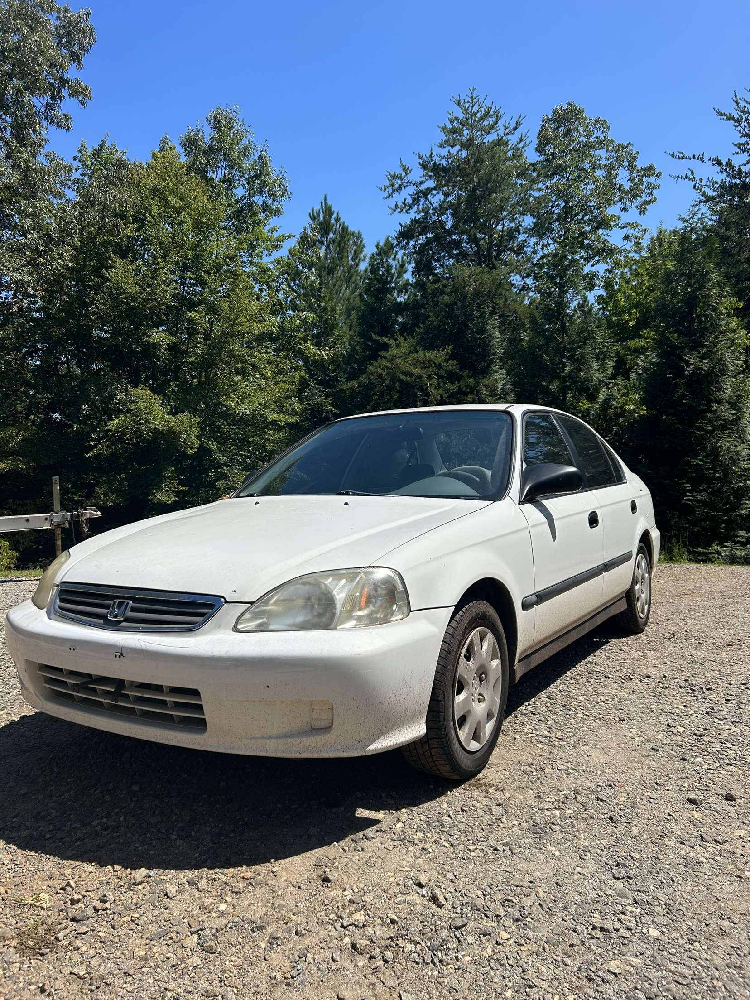
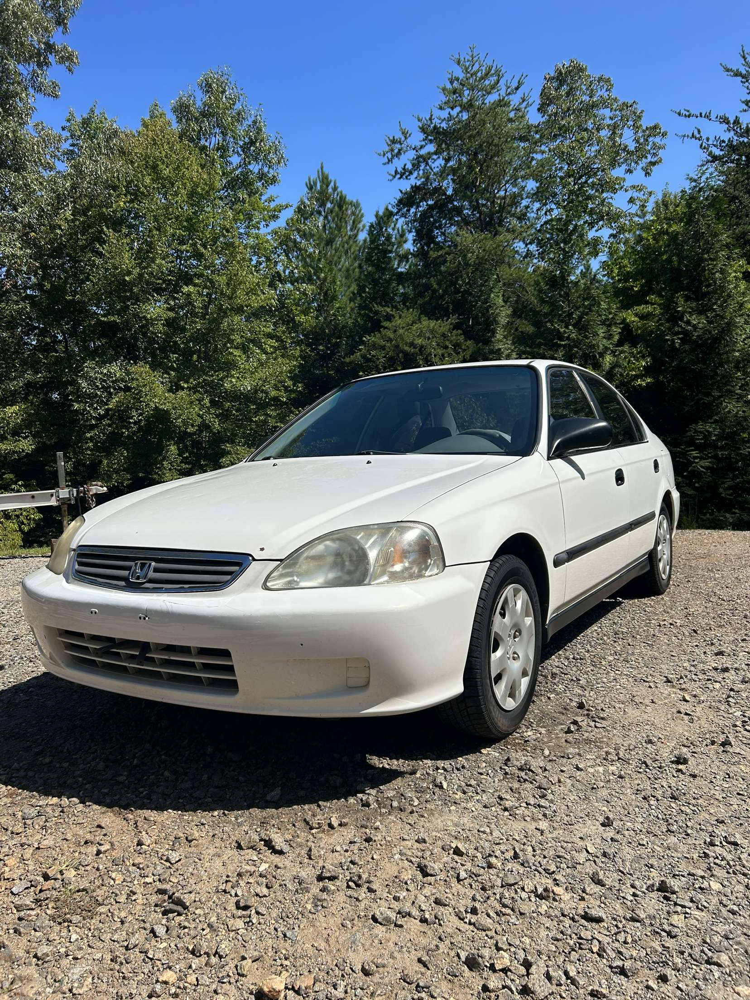
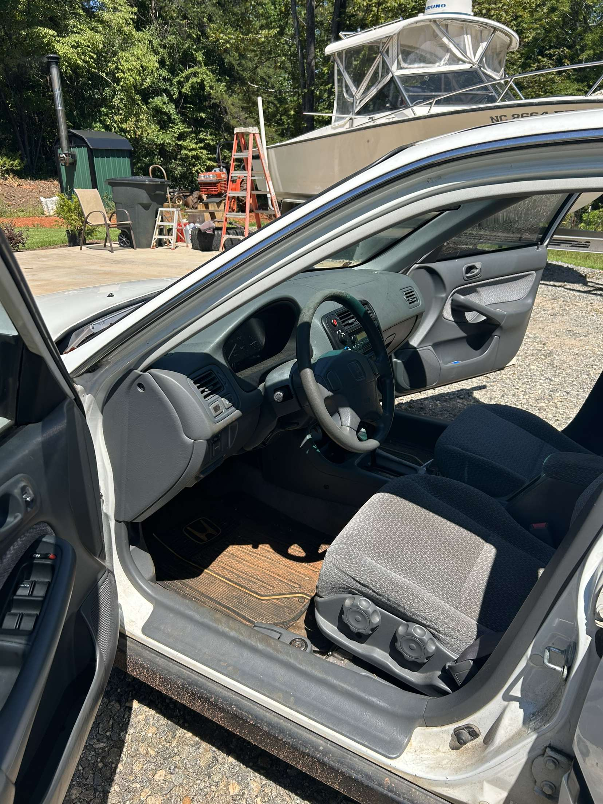
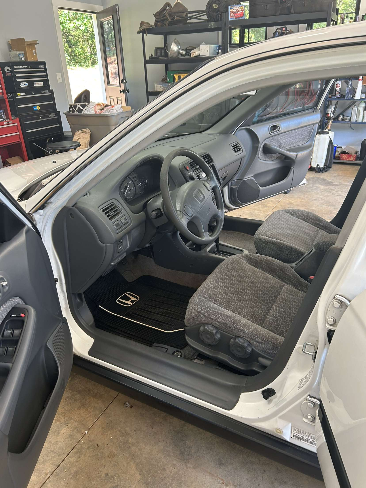
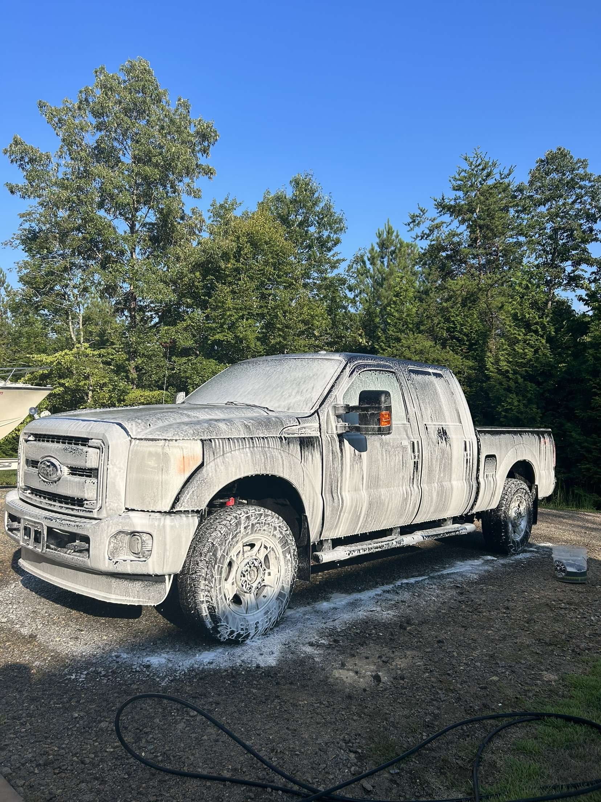
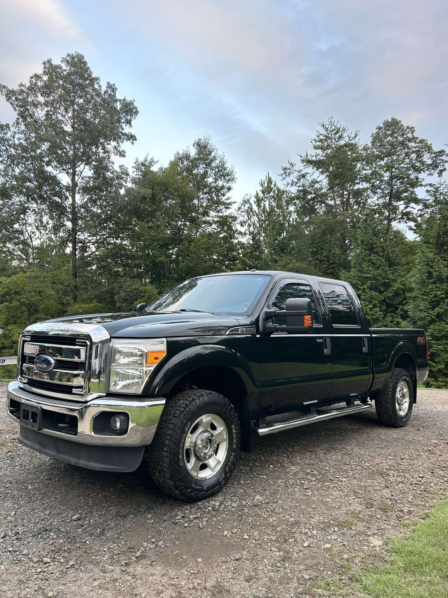

"Gabe showed up 15 minutes early, which impressed me from the start. The Civic looks better than it has in years. I will be sure to recommend him to anyone needing any detailing done"- Harold Burnett




"I am a contractor and this is my work truck, so it gets dirty, I promise you that. I had just got done with a job that had alot of dust from the wind and sawdust flying around so this truck was dirty. Now I get made fun of on the job site for having such a clean truck."-Cletus Griffith